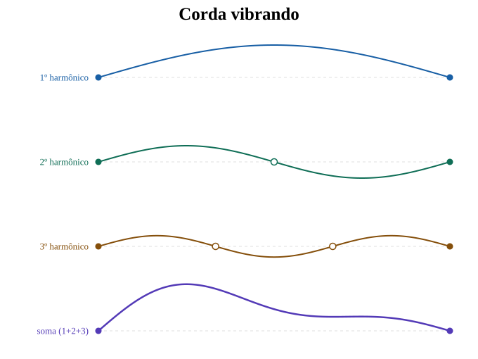
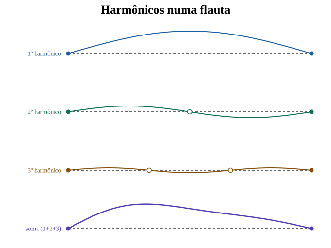
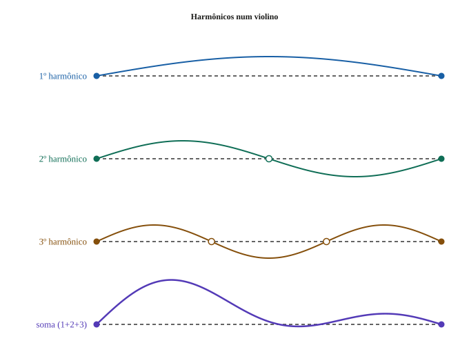
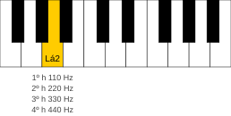
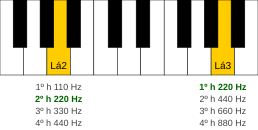

Série harmônica
O fenômeno físico por trás do timbre e da consonância: por que um violão soa diferente de um piano e por que algumas notas combinam mais do que outras.
Termos explicados neste artigo: harmônicos, série harmônica, timbre, consonância, dissonância, harmonia.
Introdução
Quando uma corda esticada é posta em movimento — como num violão —, ela vibra e perturba o ar ao redor. Essa perturbação se propaga como onda sonora até chegar ao ouvido. O princípio é o mesmo para uma flauta: ao soprar, o músico faz o ar vibrar dentro do tubo, e essa vibração também se propaga como onda sonora. Quando violão e flauta tocam a mesma nota, o ouvido reconhece a similaridade — mas também percebe, sem dificuldade, que os dois sons são diferentes, ou seja, possuem timbres diferentes.
Isso nos leva a duas perguntas:
- Por que a mesma nota — o mesmo Lá, por exemplo — soa de um jeito num violão, de outro numa flauta, de outro num piano, de outro num saxofone?
- Por que alguns sons combinam de um jeito tão firme, enquanto outros parecem mais ásperos, tensos ou instáveis? O acorde de Dó maior, por exemplo, é formado por três notas — Dó, Mi e Sol. Tocadas juntas, essas notas combinam.
A série harmônica é uma das melhores portas de entrada para responder a essas duas perguntas. Ela ajuda a entender tanto o timbre quanto por que certos sons combinam (são consonantes) enquanto outros criam tensão ou atrito (são dissonantes). Mas essa explicação tem limite: ela ilumina muito, sem resumir sozinha toda a história da consonância.
Acústica do som musical
Quando uma corda vibra, ela empurra e puxa o ar ao redor alternadamente — e essa vibração se propaga em todas as direções, como as ondas que se formam na água quando uma pedra cai num lago. O mesmo acontece com outros instrumentos: numa flauta, é a coluna de ar dentro do tubo que vibra; num xilofone, é a barra de madeira ou metal. Em todos os casos, o princípio é o mesmo: uma fonte em vibração perturba o meio ao redor, e essa perturbação chega até o ouvido. Quando essa vibração se repete de forma regular — num padrão constante de ciclos por segundo —, temos um som periódico. É essa regularidade que permite ao ouvido perceber uma nota musical definida.
A velocidade com que esse som periódico se repete é o que chamamos de frequência — medida em hertz (Hz), ou ciclos por segundo. O Lá que serve de referência para afinar instrumentos, por exemplo, vibra a 440 Hz: sua vibração se repete 440 vezes a cada segundo. Quanto mais alta a frequência, mais agudo[1] soa o som; quanto mais baixa, mais grave.[2]
Tabela 1: exemplos de sons graves e agudos com frequências aproximadas.
| Exemplo | Frequência aproximada |
|---|---|
| Nota mais grave do piano (Lá 0) | 27,5 Hz |
| Rugido do leão | ~40 Hz |
| Nota mais grave de um baixo profundo (homem em coral) | ~65 Hz |
| Nota mais alta de uma soprano | ~1.047 Hz |
| Nota mais aguda do piano (Dó 8) | 4.186 Hz |
| Pio de um pássaro | ~4.000–8.000 Hz |
Harmônicos
Uma corda de violão tocada pelo dedo não oscila apenas em uma frequência. O movimento mais visível é o de vai e volta — a corda se desloca de um lado ao outro em sua extensão total. Esse é o componente principal, chamado de fundamental — também chamado de 1º harmônico.
Mas ao mesmo tempo, e de forma invisível a olho nu, a corda também oscila em partes. No modo seguinte, ela se divide em duas metades: o centro permanece fixo — chamamos esse ponto de nó — enquanto cada metade oscila em direções opostas, formando um "S". Esse componente vibra no dobro da frequência fundamental e é chamado de 2º harmônico. O mesmo princípio se repete: a corda pode dividir-se em três partes (com dois nós), em quatro partes (com três nós), e assim por diante. Cada divisão produz um componente que vibra em um múltiplo inteiro da fundamental — 3 vezes, 4 vezes, 5 vezes — e recebe o nome de 3º harmônico, 4º harmônico, e assim sucessivamente.
Todos esses modos de vibração ocorrem ao mesmo tempo. O componente mais grave — a fundamental — corresponde à frequência que dá nome à nota. Os demais harmônicos se somam a ela, cada um com sua própria frequência e intensidade.

Tabela 2: primeiros harmônicos de uma fundamental em 110 Hz.
| Harmônico | Frequência |
|---|---|
| 1º harmônico (fundamental) | 110 Hz |
| 2º harmônico | 220 Hz |
| 3º harmônico | 330 Hz |
| 4º harmônico | 440 Hz |
| 5º harmônico | 550 Hz |
Assim, podemos definir a série harmônica:
Com a série harmônica apresentada, podemos agora responder às duas perguntas feitas na introdução. A primeira — o timbre — diz respeito a uma única nota: é o que dá a cada instrumento sua "cor" sonora característica. A segunda — consonância e dissonância — surge da relação entre duas ou mais notas tocadas juntas.
Timbre
Primeiro, vamos analisar um som individual — o que acontece dentro de uma única nota.
O timbre é a característica sonora de um som. É o que permite distinguir, de ouvido, se uma nota está sendo tocada num piano ou num saxofone. Um violão e um piano tocando o mesmo Lá produzem sons com a mesma fundamental — a mesma frequência principal —, mas com harmônicos em intensidades diferentes. No violão, certos harmônicos são mais pronunciados; no piano, outros. Essa distribuição de intensidades é o que dá a cada instrumento sua "cor" sonora característica.
O mesmo vale para a voz humana. Um tenor e uma soprano cantando a mesma nota compartilham a mesma fundamental, mas soam de formas completamente distintas. Isso acontece porque a musculatura vocal de um homem tem espessura e rigidez diferentes das de uma mulher — e o conjunto formado pelos pulmões e pela cabeça, que funciona como caixa de ressonância, também é biologicamente distinto entre os dois. Essas diferenças alteram a intensidade relativa dos harmônicos produzidos, resultando em timbres diferentes. É por isso que reconhecemos de imediato se é um tenor ou uma soprano — e também por isso identificamos a voz de uma pessoa mesmo ao telefone, numa gravação ou num ambiente barulhento: o timbre funciona como uma assinatura sonora.


Consonância e Dissonância
Agora, vamos analisar o que acontece quando duas ou mais notas são tocadas ao mesmo tempo — e como nosso ouvido percebe essa combinação.
Veja na tabela abaixo os harmônicos gerados quando pressionamos a nota Lá 2 (110 Hz) em um piano. Cada harmônico corresponde a uma nota musical reconhecível:
Tabela 3: harmônicos gerados pela nota Lá 2 (110 Hz) com as notas musicais correspondentes.
| Harmônico | Frequência | Nota musical[3] |
|---|---|---|
| 1º harmônico (fundamental) | 110 Hz | Lá 2 |
| 2º harmônico | 220 Hz | Lá 3 |
| 3º harmônico | 330 Hz | Mi 4 |
| 4º harmônico | 440 Hz | Lá 4 |
| 5º harmônico | 550 Hz | Dó♯ 5 |
Essa tabela revela algo importante: ao tocar uma única nota, o piano não produz apenas aquela frequência. Quando a tecla do Lá 2 é pressionada, além da nota fundamental em 110 Hz, soam simultaneamente — com volume mais baixo — as frequências dos harmônicos: 220 Hz, 330 Hz, 440 Hz, e assim por diante.

Se tocarmos a tecla do Lá 2 e, ao mesmo tempo, a tecla Lá 3 que produz 220 Hz — o Lá na oitava[4] acima, ou seja, a repetição da mesma nota numa oitava acima —, nosso ouvido percebe que os dois sons combinam. Isso acontece porque aquela frequência de 220 Hz já estava presente, em volume mais baixo, dentro do Lá 2. Dizemos que as duas notas são consonantes. Chamamos isso de consonância.

Observando a tabela com mais atenção, vemos que, até o 5º harmônico, além das repetições do Lá em oitavas diferentes, aparecem também as notas Mi e Dó♯. Se tocarmos essas três notas juntas no piano — Lá, Dó♯ e Mi —, elas soarão consonantes ao ouvido. Esse som harmonioso é o que chamamos de acorde de Lá maior. A mesma lógica se aplica a outros acordes: o acorde de Dó maior, por exemplo, é formado pelas notas Dó, Mi e Sol. Os acordes são estudados na Harmonia (ver artigo: Harmonia).
O oposto também vale: há combinações de notas que o ouvido percebe como tensas ou ásperas — as chamadas dissonâncias. Lá e Si♭, por exemplo, tocados juntos, criam essa sensação de atrito. Isso acontece porque os harmônicos dessas duas notas não coincidem — em vez de se reforçarem, eles interferem uns nos outros. A diferença entre consonância e dissonância, e o papel que ela desempenha na música, será o assunto de outro artigo.
Conclusão
A série harmônica não é uma teoria musical: é uma propriedade física de qualquer som periódico. Quando uma corda, um tubo ou uma voz produz som, não gera apenas uma frequência — gera uma fundamental acompanhada de harmônicos em múltiplos inteiros dessa frequência.
Esse fenômeno explica duas das perguntas feitas na introdução. O timbre de cada instrumento — o que faz um violão soar diferente de um piano — resulta da intensidade relativa dos harmônicos produzidos. E a consonância entre notas tem raiz na própria série: notas que combinam ao ouvido tendem a compartilhar harmônicos entre si, como vimos no caso do Lá 2 e do Lá 3; notas que não compartilham harmônicos, como Lá e Si♭, tendem a criar tensão — são dissonantes. Desse mesmo princípio emergem os acordes e, com eles, o campo de estudo que a teoria musical chama de harmonia.
Notas
- Um som agudo é aquele que percebemos como "alto" em termos de altura musical — não de volume, mas de posição na escala. O pio de um pássaro, o apito de uma chaleira ou as notas mais altas de uma flauta são exemplos de sons agudos. Mulheres e crianças tendem a ter vozes mais agudas do que homens. ↩
- Um som grave é aquele que percebemos como "baixo" em termos de altura musical. O ronco de motor, o bumbo de uma bateria ou as notas mais baixas de um contrabaixo são exemplos de sons graves. Homens tendem a ter vozes mais graves do que mulheres e crianças. ↩
- Para fins didáticos, este artigo associa as frequências dos harmônicos a nomes de notas usando o referencial da afinação justa. É por isso que o 3º harmônico de Lá 2 corresponde a Mi 4, e o 5º harmônico a Dó♯ 5. Em outro artigo, será discutido o conceito de temperamento igual e como ele afeta essas frequências na prática. ↩
- A oitava é o intervalo entre duas notas de mesmo nome — como dois Lás — em que a mais aguda vibra exatamente no dobro da frequência da mais grave. Apesar de serem notas em alturas diferentes, o ouvido as percebe como muito próximas em identidade — tanto que recebem o mesmo nome. Um exemplo cotidiano: quando homens e mulheres cantam juntos a mesma melodia, cada um na região média de conforto da sua voz, estão naturalmente cantando a uma oitava de distância. A melodia é reconhecida como a mesma por todos. ↩
Referências bibliográficas
BENADE, Arthur H. Fundamentals of Musical Acoustics. New York: Dover Publications, 1990 [ed. orig. 1976].
BENSON, Dave. Music: A Mathematical Offering. University of Aberdeen, 2008.
MAOR, Eli. Music by the Numbers: From Pythagoras to Schoenberg. Princeton: Princeton University Press, 2018.